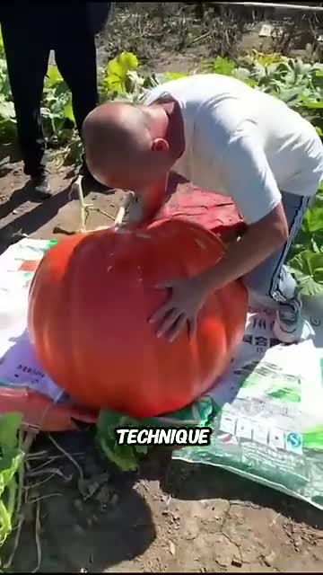
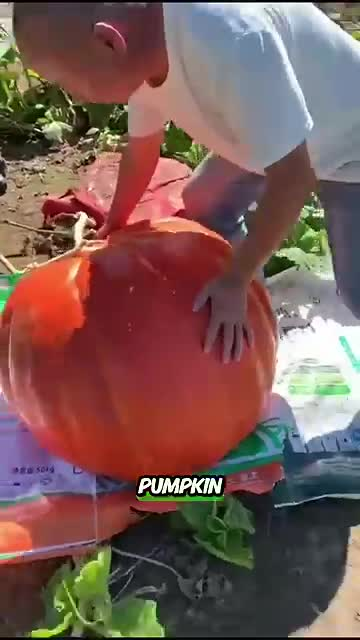
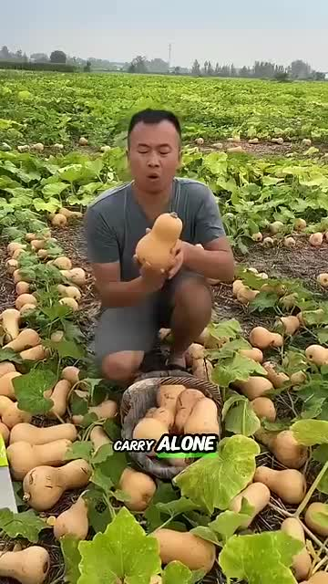
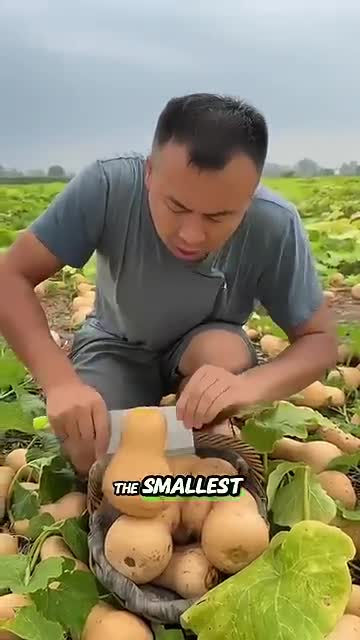
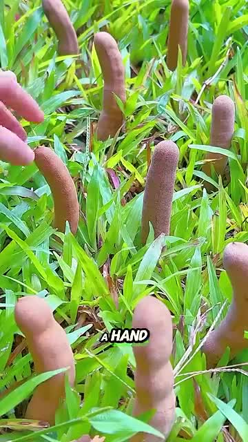
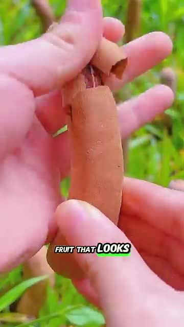
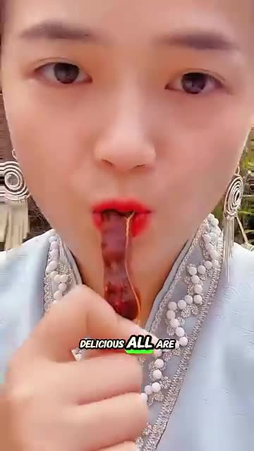
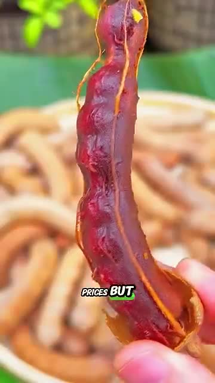

Description: Observe the world's largest pumpkin that no single man can carry alone.



Description: Note the smallest pumpkin developed by the Chinese, the size of a hand.


Description: Look at the tamarind fruit that looks awkward but is described as very delicious.


Description: Mention that all these pumpkins and fruits are sold for high prices in the market.
